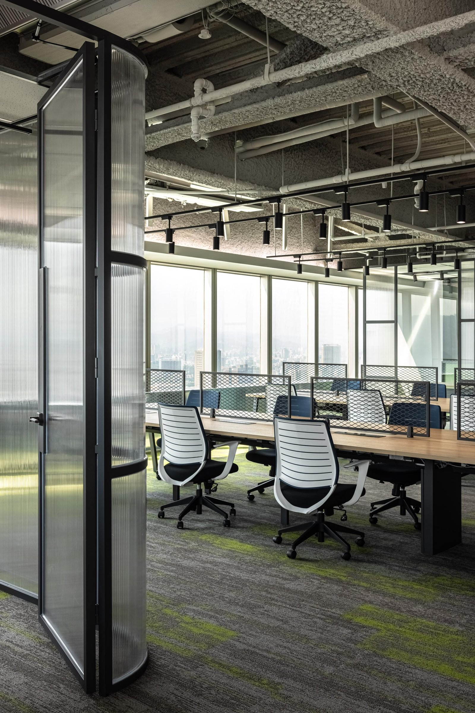
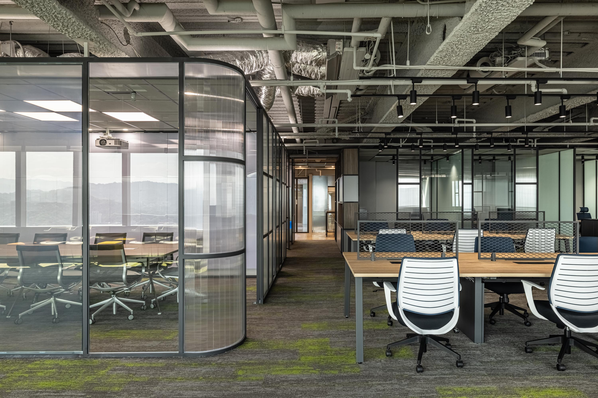
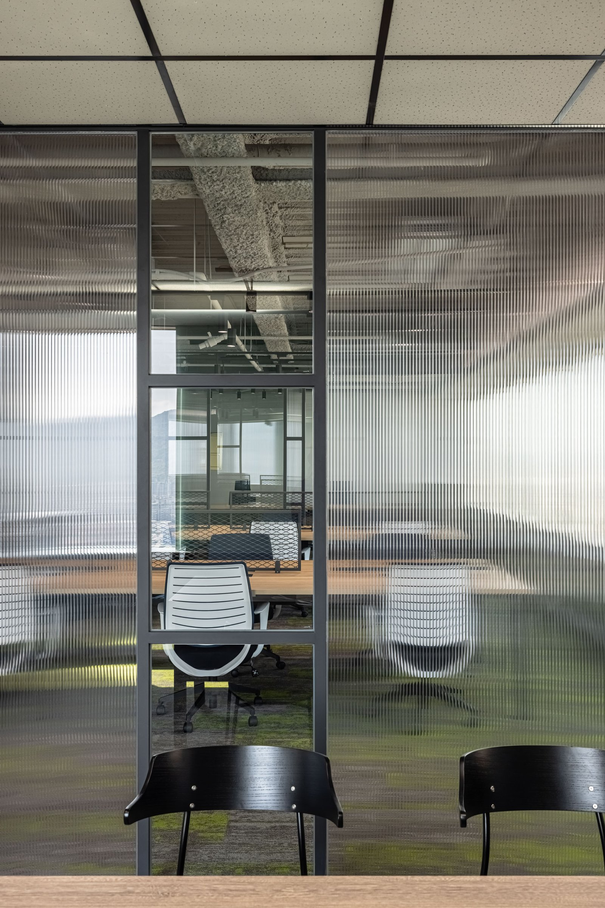
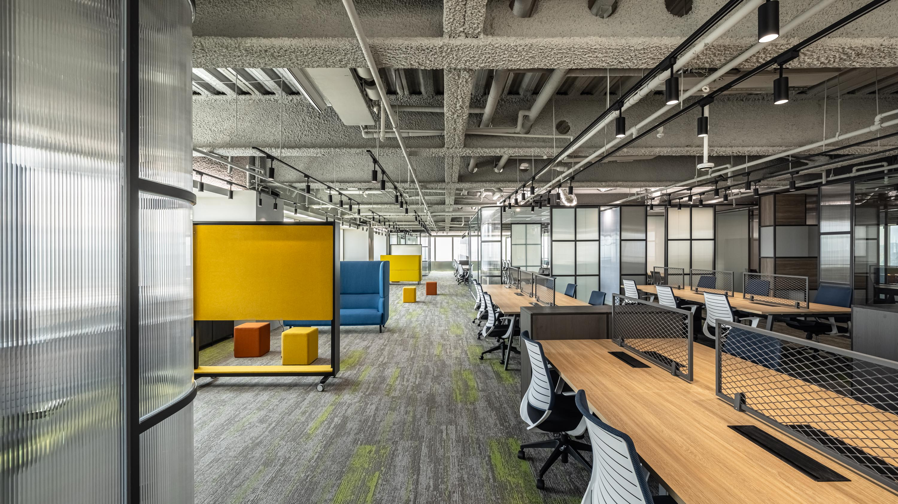
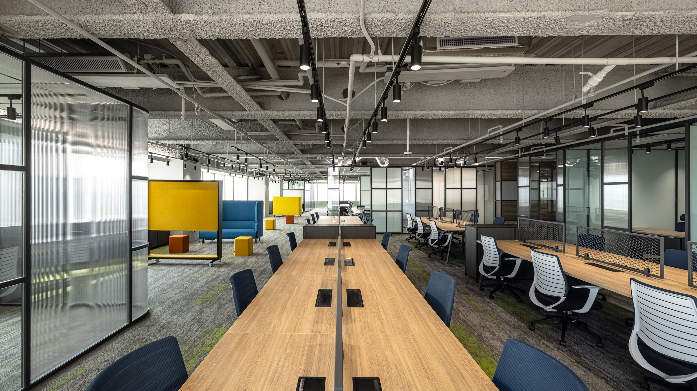
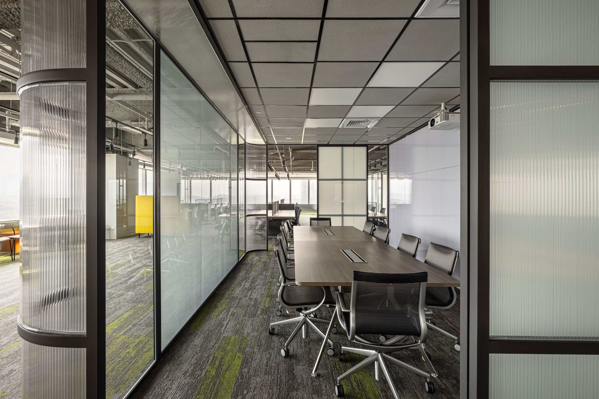
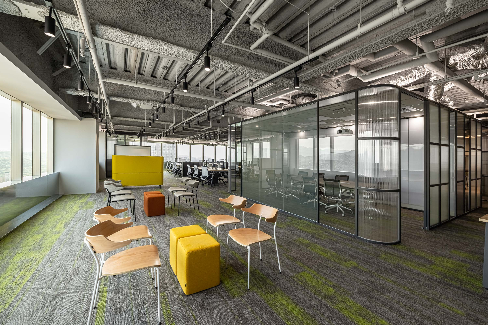
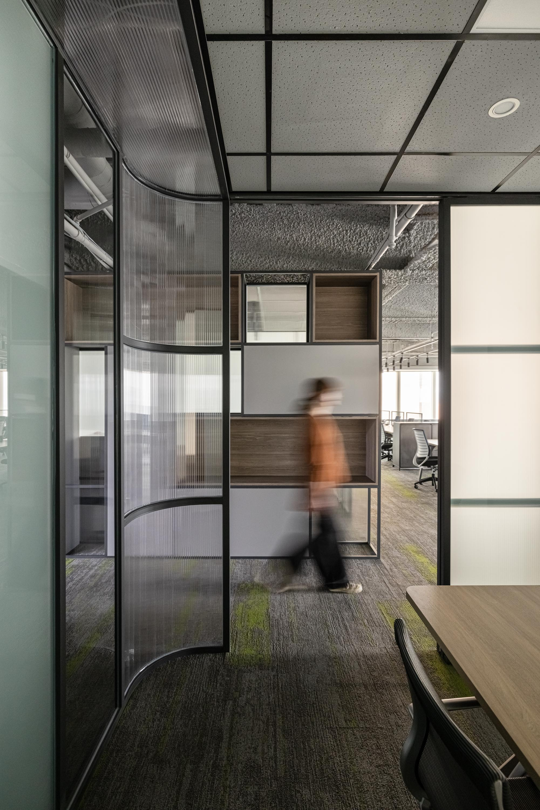
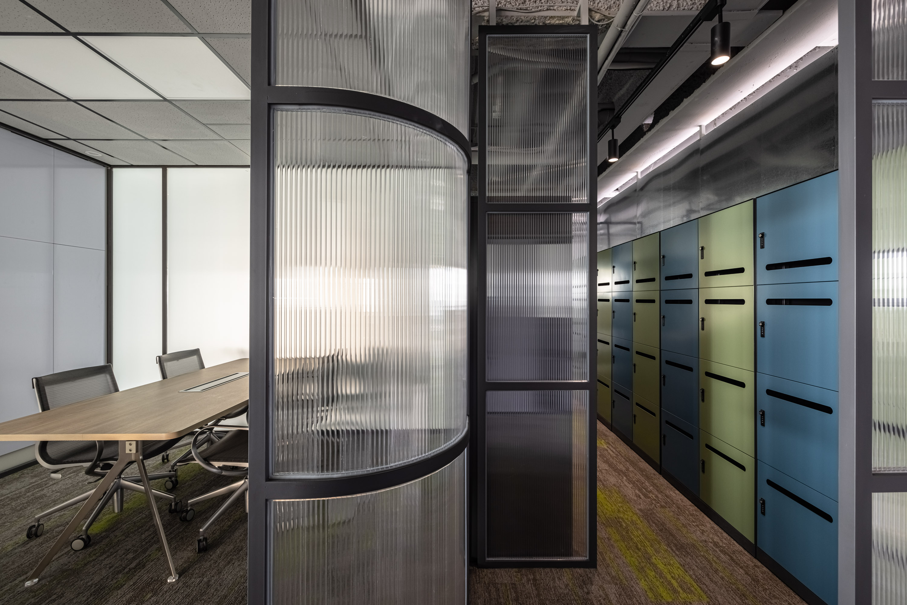
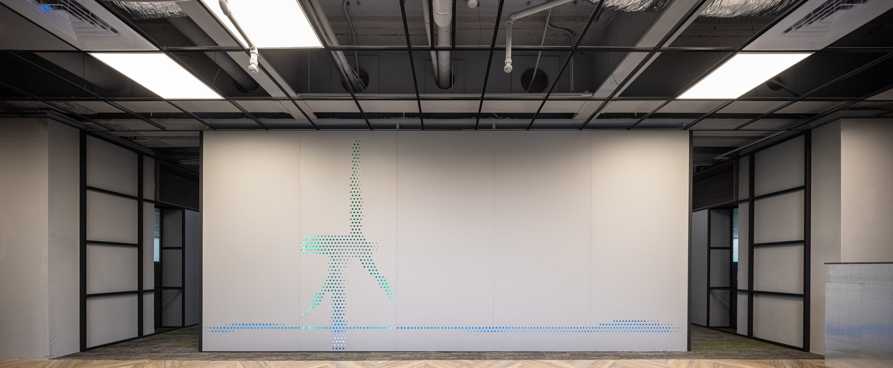

時間壓力讓設計變純粹了——保留的東西，都是真正需要的。
Time pressure made the design pure — what remained was what was truly needed.



01
臨時接手，一個月完工。這是一個從一開始就沒有「試試看」空間的案子。在有限時間裡，決策的順序完全改變——你沒辦法先做出來再改，只能先想清楚，讓工廠做完，到現場組裝。
Handed over mid-process, one month to completion. No room to try and revise — only to think clearly, then execute. The decision sequence was inverted: everything resolved in the factory before anything reached the site.


02
所有隔屏、鐵件、櫃體全部場外預製，每一段牆體、每一處孔位，在工廠裡就確定尺寸。現場只有一件工作：精準定位，接上配件。
Every partition, steel element, and cabinet was fabricated off-site. Every wall segment, every socket position confirmed in the factory. On-site, one task only: precise positioning, connect the pieces.


03
32 樓的視野是這個空間最大的資產。設計的工作不是在室內創造風景，而是把窗外的風景拉進來。傢俱配置、隔屏高度、材質反射率——每一個決定都在確保視線可以不被打斷地抵達窗邊。
The 32nd-floor view is the space's greatest asset. The design task is not to create scenery indoors, but to pull the view in. Furniture layout, partition height, material reflectivity — every decision ensures the eye reaches the window uninterrupted.


04
切掉的東西，都是原本可能只是「感覺不錯」的決定。保留的東西，都是真正需要的。時間壓力反而讓這個空間比大部分案子更誠實。
What was cut was what only ever felt like a good idea. What remained was what was truly needed. Time pressure made this space more honest than most.


05
完工後回頭看，一個月的時間反而讓團隊學到一件事：設計最花時間的部分，往往是猶豫。當猶豫被拿掉，每一個決定都更果斷，空間也因此更乾淨。這不是速度的勝利，是專注力的勝利。
Looking back, the one-month timeline taught the team something: the most time-consuming part of design is often hesitation. When hesitation is removed, every decision becomes more decisive and the space cleaner. This is not a victory of speed — it is a victory of focus.
All Photos